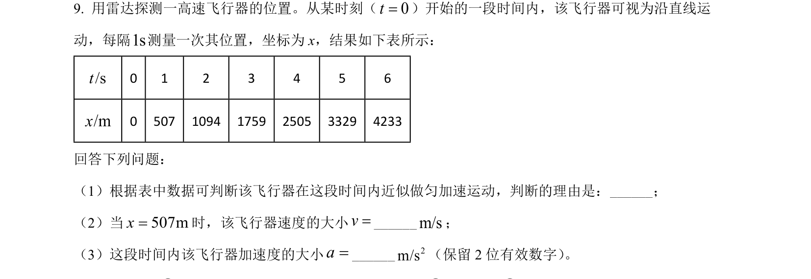
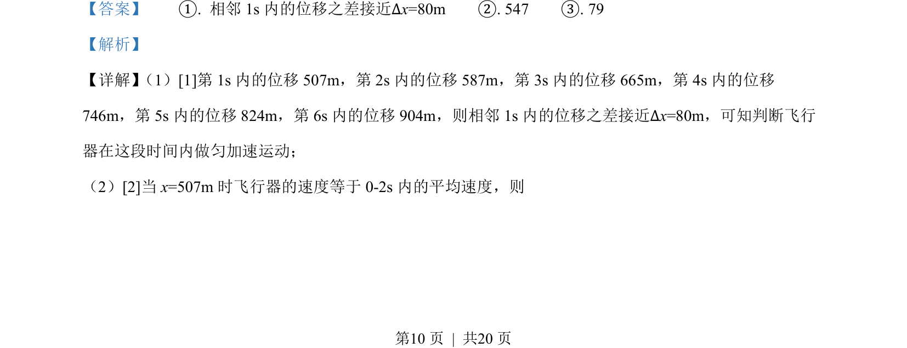
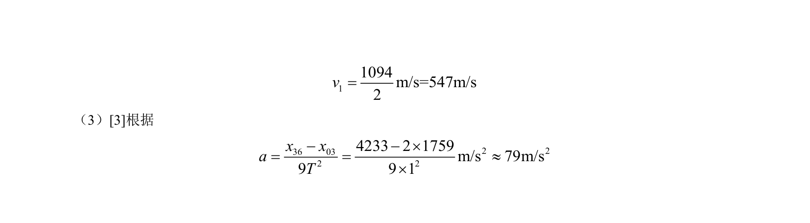

考点：匀变速直线运动判别 平均速度法求瞬时速度 逐差法求加速度
匀变速直线运动判别
平均速度法求瞬时速度
逐差法求加速度

根据位移差判断匀加速运动，并利用平均速度求瞬时速度及逐差法计算加速度。


📄 原 PDF 第 10 页：素材/真题/吉林/2008-2024·（吉林）物理高考真题/2022年高考物理试卷（全国乙卷）（解析卷）.pdf
素材/真题/吉林/2008-2024·（吉林）物理高考真题/2022年高考物理试卷（全国乙卷）（解析卷）.pdf